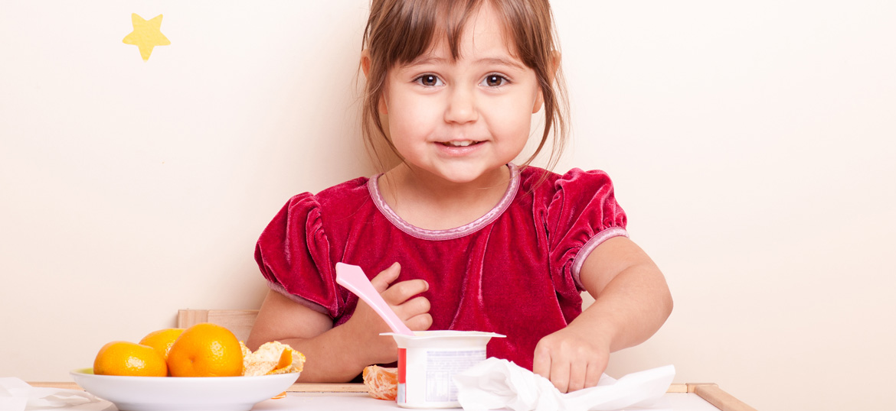
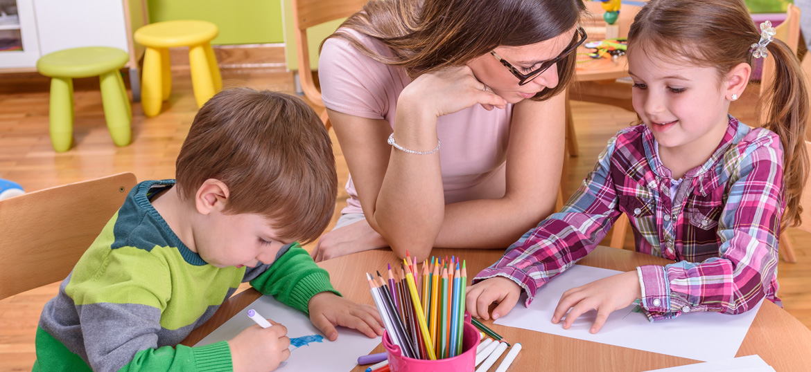
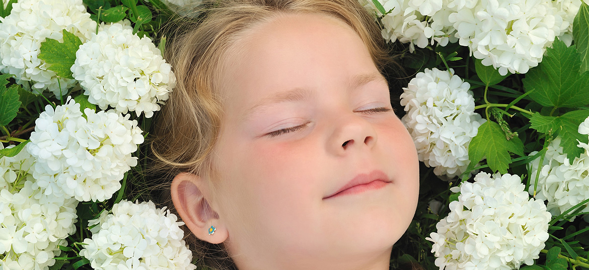

Curriculum
The ultimate goal and purpose at Helios is to prepare its student population to emerge as independently as possible
to meet the challenges of community life. Our curriculum is a customizable educational tool that adapts to the various
abilities of each student. It incorporates visual cues and teaching based on applied behavior analysis to facilitate the
learning capability of our children and thus enhance results.
Helios also offers enrichment programs in order to supplement the educational process.
These activities enhance learning and have been proven to assist children with Autism to learn to self regulate,
engage in relaxation techniques, exhaust energy, concentrate, and many more areas that facilitate learning.
- Robotic and chess programs – verified research supports the concept that robotics and chess are applications
that stimulate the neurons that are needed for autistic children to excel in science and math.
- Yoga – helps the children to self-regulate, to breath, and to create and become aware of sensory input.
- Music integration – music is proven to be an effective method to stimulate our children in a positive way.
- Art therapy, dance and sports
What are educational standards?
Educational standards are the learning goals for what students should know and be able to do at each grade level.
Education standards, like Common Core are not a curriculum. At Helios we use Houghton Mifflin Harcourt® for our
curriculum development. In other words, the Common Core is what students need to know and be able to do, and curriculum
is how students will learn it. The Common Core State Standards are educational standards for English language arts
(ELA)/literacy and mathematics in grades
K-12. In addition, we also use The Unique Learning Curriculum which is also
aligned with State Standards.
The curriculum is divided into eight areas which contribute to the development of the key skills,
both academic and personal in order to be successful
-
English
English is central to our curriculum at Helios School.
-
Mathematics
At Helios, pupils are encouraged to develop fluency in the four mathematical operations through practice and repetition,
as well as, knowing the general principles of shapes, space and data, order of operation and algebra.
-
Science
Science is an important part of the curriculum at Helios School because it helps us to understand the world around us.
Everything we know about the universe, from how trees reproduce to what an atom is made up of is the result of scientific
research and experiment.
-
Physical Education (PE)
Within the PE curriculum our school look at developing pupils Fundamental Movement Skills (FMS). FMS skills are
important because they are the “building blocks” or foundation movements for more complex and specialised skills.
-
Weaving wellbeing
Weaving wellbeing is a Personal, Social, Economic and Health Education (PSHE) program designed to teach children skills
and strategies which develop positive mental health. The skills are based on current research from the field of positive
psychology.
-
Computing
At Helios School we follow a bespoke computing curriculum broadly based on the National Curriculum. Pupils gain skills
and knowledge in computer science, information technology (IT) and digital literacy.
-
Food technology
In our specialist food technology room we nurture the all-important life skill of home cooking. For our young pupils,
we have a weekly cooking club where we explore both sweet and savoury recipes, as well as the children’s own favourite recipes.
Some of our acitivities
Nutritional Support

“Food for the Brain” Dietary intervention is a cornerstone of a evidence-based medical approach,
and there is convincing empirical evidence that special diets help many with autism.
Music Therapy, Yoga & Dance
Music therapy intervention serves as an integral component in helping the child with special needs
attain educational goals either through direct implementation.
Summer Camp
Geared toward development of effective communication skills and peer relationships in a social group
setting, while having fun and learning in a safe and accepting environment.
Speech & Language Therapy
Children on the autism spectrum often have difficulty understanding the communication of others
and communicating effectively with them. In fact a child on the autism spectrum may not see any
reason to communicate with other people. This may delay their language acquisition and lead to
frustration when they cannot make their needs understood.
Occupational & Physical Therapy

Occupational therapy can help children with autism perform better in school and home environments.
Parents who are referred to occupational therapy practitioners often have concerns about the behavioral
and social development problems their children with autism display in these environments, and practitioners
can assist with these issues.
Aromatherapy

Aromatherapy is so effective is the close connection between smell & memory. Associating certain activities,
images, or feelings with a certain smell helps the brain to build connections and file away other sensory data.
Example: We are all aware of the impact of walking into a house that smells of freshly baked cookies.